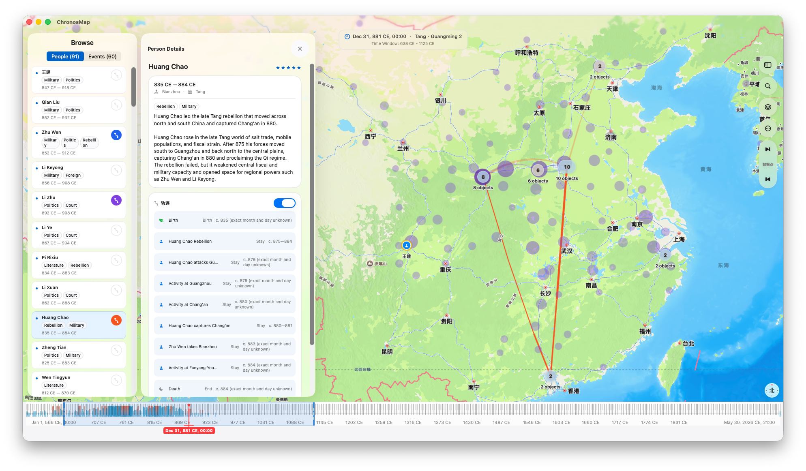
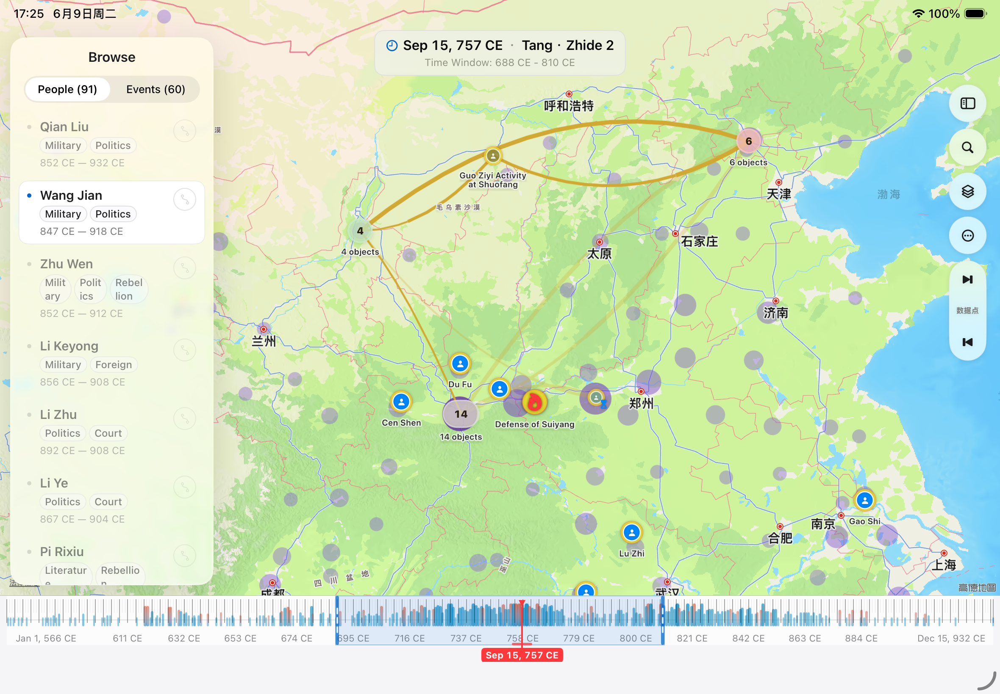
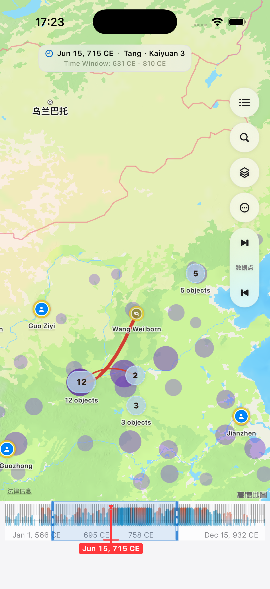

Timeline browsing
View events and person locations by year, date, or hour, and jump to real moments in the data.
ChronosMap is a time map app for iPhone, iPad, and Mac. It brings people, events, places, photos, and routes into one map and timeline, helping you understand stories through both space and time.
Open sample maps, import map packages, edit your own maps, and explore data with timelines, geo lenses, and density layers.
View events and person locations by year, date, or hour, and jump to real moments in the data.
Select an area on the map and see the events and trajectory points that happened there.
Create your own maps with people, events, trajectory points, images, and ChronosMap files.
Import travel or everyday photos and ChronosMap can read their capture time and location to create personal trajectory points.
From photo-based travel routes on your phone to broader map browsing and editing on iPad and Mac, ChronosMap keeps one consistent time-map experience across screens.



Choose photos with location metadata, and ChronosMap creates trajectory points from their real coordinates and capture times. Each photo becomes a memory node for trips, city walks, field work, or personal timelines.
The app includes a Tang Dynasty of China sample map that shows how people, events, and routes can be organized around time and place. You can also start from a blank map.